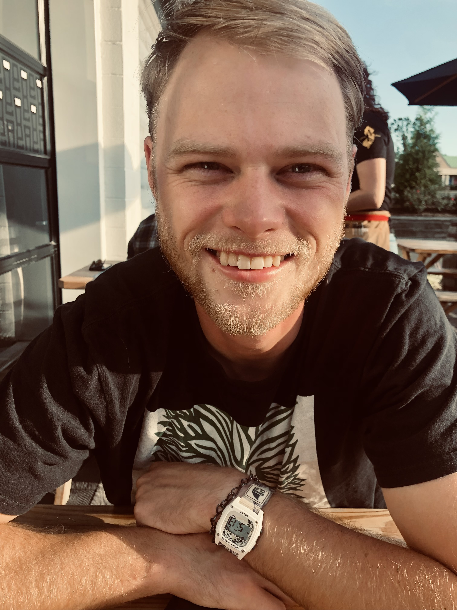

Bio's
Because relationships are a huge part of our Minisrty,
we'd love for you to get to know us!
The Youth Ministers
Kenneth Falls

Ken is a life long member of St. Marys Parish. As a teen He participated in the first Life Teen here at St. Mary's
He served two years on the National Evangilization Teams ( NET ) traveling around the country ministering to high schoolers.
after NET Kenny Attended St. Charles Borromeo Seminary in Philadelphia. Kenny is passionate about Surfing, the ocean and anything ourdoors.